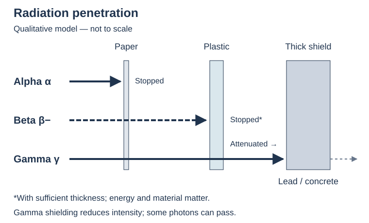

เรื่องนี้ต้องจำ: แยกชนิดรังสี ดุลสมการสลาย คำนวณครึ่งชีวิต และอธิบายการใช้ประโยชน์กับการป้องกัน · ตอบทีละส่วนก่อนเปิดเฉลย มีช่องเขียนหลังทุกข้อย่อย
1. นิวเคลียสไม่เสถียร → กัมมันตภาพรังสี
กัมมันตภาพรังสี คือการที่นิวเคลียสไม่เสถียรสลายตัวเองพร้อมปล่อยอนุภาคหรือรังสี ไม่ใช่การเสียอิเล็กตรอนวงนอกแบบการเกิดไอออน เบ็กเคอเรลค้นพบการแผ่รังสีจากสารประกอบยูเรเนียม ส่วนมารีและปีแอร์ กูรีศึกษาสารกัมมันตรังสีและค้นพบพอโลเนียมกับเรเดียม
ทวนสัญลักษณ์ \({}^{A}_{Z}X\): X คือสัญลักษณ์ธาตุ, Z คือเลขอะตอมหรือจำนวนโปรตอน และ A คือเลขมวลหรือผลรวมจำนวนโปรตอนกับนิวตรอน ส่วน N คือจำนวนนิวตรอนในนิวเคลียสหนึ่งอะตอม จึงคำนวณได้จาก \(N=A-Z\)
ไอโซโทปกัมมันตรังสี คือไอโซโทปที่นิวเคลียสไม่เสถียร เช่น C-14; C-12 และ C-13 เสถียร จึงไม่ใช่คาร์บอนทุกไอโซโทปที่เป็นกัมมันตรังสี ส่วน ธาตุกัมมันตรังสี คือธาตุที่ไม่มีไอโซโทปเสถียร เช่น Tc, Pm, U รวมถึงธาตุที่ Z ≥ 83; Bi-209 ก็สลายตัวได้ แต่มีครึ่งชีวิตยาวมาก
อัตราส่วน N/Z คือจำนวนนิวตรอนต่อจำนวนโปรตอน ความเสถียรเกี่ยวข้องกับแรงนิวเคลียร์ แรงผลักระหว่างโปรตอน และอัตราส่วนนี้ นิวเคลียสเสถียรเบามักมี N ใกล้ Z ส่วนนิวเคลียสเสถียรหนักมักมี N > Z อย่าใช้ N=Z ตัดสินทุกนิวเคลียส
คำถาม 1 — แยกธาตุ ไอโซโทป และไอออน
ก. C-14 มี Z=6 จงหาโปรตอนและนิวตรอน และอธิบายว่าทำไม C-12 กับ C-14 เป็นธาตุเดียวกัน
ข. คาร์บอนมี C-14 กัมมันตรังสี จึงเรียกคาร์บอนว่าธาตุที่ไม่มีไอโซโทปเสถียรได้หรือไม่? เพราะอะไร?
ค. Na กลายเป็น Na⁺ เพราะเสียอิเล็กตรอนหนึ่งตัว เป็นการสลายกัมมันตรังสีหรือไม่? นิวเคลียสเปลี่ยนหรือไม่?
ก. โปรตอน 6 นิวตรอน 14−6=8; ทั้งคู่มี Z=6 เท่ากัน แม้จำนวนนิวตรอนและความเสถียรต่างกัน
ข. ไม่ได้ เพราะ C-12 และ C-13 เสถียร ต้องแยกสมบัติของไอโซโทปหนึ่งออกจากสมบัติของทุกไอโซโทปของธาตุ
ค. ไม่ใช่ เป็นการเกิดไอออน อิเล็กตรอนเปลี่ยนแต่นิวเคลียสและ Z ไม่เปลี่ยน
2. แอลฟา บีตา แกมมา: ต่างกันอย่างไร
ในคอลัมน์ประจุ e คือประจุมูลฐาน ซึ่งมีค่าเป็นบวก โปรตอนหนึ่งตัวมีประจุ +e และอิเล็กตรอนหนึ่งตัวมีประจุ −e
| รังสี ลักษณะ และประจุ | การทะลุผ่าน / การก่อไอออนโดยทั่วไป |
|---|---|
| α นิวเคลียส He: \({}^{4}_{2}\mathrm{He}\); +2e | ทะลุผ่านต่ำ กระดาษหรือผิวหนังชั้นนอกหยุดได้; ก่อไอออนหนาแน่นตามแนวทางเดิน |
| β⁻ อิเล็กตรอน: \({}^{0}_{-1}e\); −e | ทะลุผ่านมากกว่า α; พลาสติกหรือแผ่นอะลูมิเนียมที่หนาพอช่วยหยุดได้; ก่อไอออนน้อยกว่า α โดยทั่วไป |
| γ โฟตอนคลื่นแม่เหล็กไฟฟ้า; ประจุ 0 มวลหยุดนิ่ง 0 | ทะลุผ่านสูง; ตะกั่วหรือคอนกรีตหนาช่วยลดความเข้ม ไม่ใช่กำแพงที่หยุดได้หมดทุกโฟตอน |
ในสนามไฟฟ้า α เบนไปแผ่นลบ, β⁻ ไปแผ่นบวก, γ ไม่เบน; ในสนามแม่เหล็กที่เคลื่อนตั้งฉากกับสนาม α กับ β⁻ เบนคนละทิศ γ ไม่เบน ทิศจริงขึ้นกับทิศสนามและการเคลื่อนที่ การเปรียบเทียบการทะลุผ่านขึ้นกับพลังงานและตัวกลางด้วย
เลขมวล 0 ของ β ไม่ได้แปลว่ามวลจริงเป็นศูนย์ อิเล็กตรอนมีมวล แต่ไม่ใช่นิวคลีออน ส่วนบีตามีทั้ง β⁻ และ β⁺; ตารางหลักนี้เปรียบเทียบ β⁻

คำถาม 2 — ใช้สมบัติระบุรังสี
ก. รังสี P เบนไปแผ่นลบ Q เบนไปแผ่นบวก R ไม่เบน ถ้ามีเพียง α, β⁻, γ อย่างละชนิด จงระบุ P, Q, R
ข. รังสีใดเป็นนิวเคลียสฮีเลียม และรังสีใดเป็นคลื่นแม่เหล็กไฟฟ้า? β⁻ มีมวลจริงเป็นศูนย์หรือไม่?
ค. ทำไมจึงสรุปว่า “α ทะลุผ่านต่ำจึงไม่อันตราย” ไม่ได้?
ก. P=α ประจุบวก; Q=β⁻ ประจุลบ; R=γ ไม่มีประจุ
ข. α เป็นนิวเคลียสฮีเลียม γ เป็นคลื่นแม่เหล็กไฟฟ้า; β⁻ เป็นอิเล็กตรอนจึงมีมวล แม้เขียนเลขมวล 0
ค. เมื่อสารที่ปล่อย α เข้าร่างกาย อนุภาคก่อไอออนหนาแน่นใกล้เนื้อเยื่อได้ จึงต้องพิจารณาทางรับสัมผัสด้วย
3. สมการสลายตัว: ตรวจเลขบน–เลขล่าง
นิวเคลียสแม่ คือนิวเคลียสก่อนสลาย ส่วน นิวเคลียสลูก คือผลที่ได้หลังสลาย สัญลักษณ์ ΔA และ ΔZ หมายถึงค่า A และ Z หลังสลายลบค่าก่อนสลาย ตามลำดับ
ดุลผลรวมเลขมวล A และเลขอะตอม Z ทั้งสองข้าง เลขล่างของอนุภาค เช่น −1 สำหรับ e⁻ เป็นค่าที่ใช้ดุลประจุ ไม่ได้บอกว่ามีโปรตอนติดลบ
| ชนิดการสลาย | นิวเคลียสลูก | สิ่งที่เปลี่ยน |
|---|---|---|
| α | A−4, Z−2 | เสียโปรตอน 2 ตัวและนิวตรอน 2 ตัว → เปลี่ยนธาตุ |
| β⁻ | A เดิม, Z+1 | นิวตรอนเปลี่ยนเป็นโปรตอน พร้อมปล่อย e⁻ และแอนตินิวทริโน → เปลี่ยนธาตุ |
| γ | A และ Z เดิม | ลดพลังงานจากสถานะกระตุ้น → ธาตุและไอโซโทปเดิม |
\(\bar\nu_e\) คือแอนตินิวทริโน มี A=0 และประจุ 0; สมการแบบย่อในโจทย์บางแห่งอาจละไว้ e⁻ จาก β⁻ เกิดในกระบวนการเปลี่ยนนิวตรอน ไม่ใช่ e วงนอกหลุดออกมา
ตัวอย่าง α: \({}^{238}_{92}\mathrm{U}\to{}^{234}_{90}\mathrm{Th}+{}^{4}_{2}\mathrm{He}\)
ตัวอย่าง β⁻: \({}^{14}_{6}\mathrm{C}\to{}^{14}_{7}\mathrm{N}+{}^{0}_{-1}e+\bar\nu_e\)
ใน Tc-99m ตัว m ระบุสถานะกระตุ้นที่มีอายุค่อนข้างยาว ไม่ใช่เลขมวลเพิ่ม ตัวอย่างการปล่อย γ: \({}^{99m}_{43}\mathrm{Tc}\to{}^{99}_{43}\mathrm{Tc}+\gamma\)
เสริม: β⁺ ปล่อยโพซิตรอน \({}^{0}_{+1}e\) กับนิวทริโน ทำให้ A เดิม, Z−1; การจับอิเล็กตรอนก็ทำให้ A เดิม, Z−1 แต่รับ e เข้าไป จึงไม่ใช่การปล่อย β⁻
คำถาม 3 — หานิวเคลียสลูกพร้อมตรวจดุล
ก. \({}^{226}_{88}\mathrm{Ra}\) ปล่อย α หนึ่งครั้ง จงเขียนสมการ (กำหนด Rn มี Z=86)
ข. \({}^{32}_{15}\mathrm{P}\) ปล่อย β⁻ หนึ่งครั้ง จงเขียนสมการ (กำหนด S มี Z=16) แล้วระบุจำนวนโปรตอนและนิวตรอนของนิวเคลียสลูก
ค. ถ้า Tc-99m ปล่อย γ จะได้ธาตุใหม่หรือไม่? A และ Z เปลี่ยนเท่าใด?
ก. \({}^{226}_{88}\mathrm{Ra}\to{}^{222}_{86}\mathrm{Rn}+{}^{4}_{2}\mathrm{He}\); ตรวจ 226=222+4 และ 88=86+2
ข. \({}^{32}_{15}\mathrm{P}\to{}^{32}_{16}\mathrm{S}+{}^{0}_{-1}e+\bar\nu_e\); ลูกมีโปรตอน 16 ตัว และนิวตรอน 32−16=16 ตัว; ตรวจ 15=16−1
ค. ไม่เปลี่ยนธาตุ ได้ Tc-99 ในสถานะพลังงานต่ำกว่า; ΔA=0 และ ΔZ=0
4. สลายหลายครั้ง: ใช้ผลรวมการเปลี่ยน A และ Z
นิวเคลียสลูกอาจยังเป็นกัมมันตรังสีและสลายต่อเป็น อนุกรมการสลาย ถ้ามีเฉพาะ α จำนวน a ครั้ง และ β⁻ จำนวน b ครั้ง โดยเลขห้อย i หมายถึงเริ่มต้น และ f หมายถึงสุดท้าย:
\[A_f=A_i-4a,\qquad Z_f=Z_i-2a+b\]
หา a จาก A ก่อน แล้วหา b จาก Z; γ ไม่เปลี่ยนเลขทั้งสอง สูตรนี้ใช้ไม่ได้ตรง ๆ ถ้ามี β⁺ การจับ e หรือการปล่อยนิวตรอนร่วมด้วย และ A,Z ที่ดุลได้เพียงอย่างเดียวไม่ได้ยืนยันว่าปฏิกิริยาเกิดขึ้นได้จริง
คำถาม 4 — นับแอลฟาและบีตาลบ
ก. \({}^{238}_{92}\mathrm{U}\) เปลี่ยนเป็น \({}^{206}_{82}\mathrm{Pb}\) ถ้ามีเพียง α และ β⁻ ต้องปล่อยอย่างละกี่ครั้ง? แสดงการหา
ข. ถ้าระหว่างทางมี γ เพิ่มอีกหลายครั้ง จำนวน α และ β⁻ ที่คำนวณจาก A,Z ข้างต้นต้องเปลี่ยนหรือไม่? เพราะอะไร?
ก. a=(238−206)/4=8; 82=92−2(8)+b จึง b=6: ปล่อย α 8 ครั้ง และ β⁻ 6 ครั้ง
ข. ไม่เปลี่ยน เพราะ γ ลดพลังงานแต่ไม่เปลี่ยน A หรือ Z จึงนับจำนวน γ จากผลต่าง A,Z ไม่ได้
5. ครึ่งชีวิต: ลดครึ่งหนึ่งของที่เหลือทุกช่วง
ครึ่งชีวิต \(T_{1/2}\) คือเวลาที่จำนวนนิวเคลียสของไอโซโทปกัมมันตรังสีเดิมลดเหลือครึ่งหนึ่ง เป็นสมบัติเฉพาะของไอโซโทปและสถานะนิวเคลียร์นั้น ไม่ใช่ค่าร่วมของทุกไอโซโทปของธาตุ โดยทั่วไปไม่เปลี่ยนอย่างมีนัยสำคัญด้วยอุณหภูมิ ความดัน หรือปฏิกิริยาเคมีตามปกติในโจทย์ระดับนี้
| เวลาผ่านไป | สัดส่วนเหลือ | สัดส่วนสลายไปแล้ว |
|---|---|---|
| 0 | 1 | 0 |
| 1T1/2 | 1/2 | 1/2 |
| 2T1/2 | 1/4 | 3/4 |
| 3T1/2 | 1/8 | 7/8 |
| 4T1/2 | 1/16 | 15/16 |
สลายแต่ละครั้งเป็นกระบวนการสุ่ม จึงระบุเวลาสลายของนิวเคลียสเดี่ยวไม่ได้ กราฟและสูตรเป็นแบบจำลองเชิงสถิติสำหรับนิวเคลียสจำนวนมาก ไม่ได้หมายความว่าแต่ละอะตอมมีนาฬิกานับเวลาครึ่งชีวิต

คำถาม 5 — อ่านกราฟและแก้ความเข้าใจผิด
ก. หลัง 3 ครึ่งชีวิต เหลือกี่เปอร์เซ็นต์ และสลายไปแล้วกี่เปอร์เซ็นต์?
ข. “ผ่านไป 2 ครึ่งชีวิตแล้วสารเดิมต้องหมด” ถูกหรือไม่? อธิบายด้วยแบบจำลอง
ก. เหลือ 1/8=12.5%; สลายไป 7/8=87.5% ไม่ใช่สลายไป 12.5%
ข. ไม่ถูก เหลือ 1/4 เพราะแต่ละช่วงลดครึ่งหนึ่งของที่เหลือ ไม่ได้ลบปริมาณเท่าเดิมทุกครั้ง; แบบจำลองต่อเนื่องเข้าใกล้ศูนย์ ไม่เป็นศูนย์ที่เวลาจำกัด
6. คำนวณปริมาณที่เหลือและกัมมันตภาพ
ในส่วนครึ่งชีวิต N₀ คือจำนวนนิวเคลียสของไอโซโทปเดิมเมื่อเริ่มต้น และ Nt คือจำนวนที่ยังไม่สลายเมื่อเวลาผ่านไป t โดย N ในส่วนนี้นับนิวเคลียสของสารจำนวนมาก ต่างจาก N ที่นับนิวตรอนในนิวเคลียสหนึ่งอะตอมในส่วนที่ 1 ส่วน m₀ และ mt คือมวลของไอโซโทปเดิมที่ยังไม่สลาย ณ เวลาเริ่มต้นและเวลา t ตามลำดับ
ถ้าไม่มีการเติมหรือสูญเสียสารเดิมด้วยกระบวนการอื่น:
\[\frac{N_t}{N_0}=\frac{m_t}{m_0}=\left(\frac12\right)^{t/T_{1/2}}\]
มวลในสูตรนี้ ไม่ใช่มวลรวมทั้งภาชนะหรือมวลรวมของสารแม่กับสารลูก; t คือเวลาที่ผ่านไป และต้องใช้หน่วยเวลาเดียวกับครึ่งชีวิต T1/2
กัมมันตภาพ R คืออัตราการสลาย หน่วย Bq = 1 ครั้งต่อวินาที กำหนด R₀ เป็นอัตราสลายเมื่อเริ่มต้น และ Rt เป็นอัตราสลายเมื่อเวลาผ่านไป t สำหรับไอโซโทปเดี่ยว \(R_t/R_0=2^{-t/T_{1/2}}\) ถ้าสารลูกปล่อยรังสีด้วย กัมมันตภาพรวมของตัวอย่างอาจไม่ลดตามสูตรของสารแม่เพียงชนิดเดียว
เสริม — ค่าคงตัวการสลาย: λ บอกโอกาสสลายต่อหน่วยเวลาของนิวเคลียส และ ln หมายถึงลอการิทึมธรรมชาติ โดย \(R=\lambda N\) และ \(\lambda=\ln2/T_{1/2}\) ซึ่ง N คือจำนวนนิวเคลียสเดิมที่ยังไม่สลาย ถ้าต้องการ R เป็น Bq ต้องใช้ λ ในหน่วย s⁻¹ จึงต้องแทนครึ่งชีวิตเป็นวินาที
วิธีทำ: ระบุ “เหลือ” หรือ “สลายไป” → ทำหน่วยเวลาให้ตรง → หาจำนวนช่วงครึ่งชีวิต n=t/T1/2 → หารปริมาณเริ่มต้นด้วย 2n → ถ้าถามที่สลาย ให้เอาเริ่มต้นลบที่เหลือ ตัวอย่าง 80 mg ผ่าน 2 ครึ่งชีวิต เหลือ 20 mg และสลายไป 60 mg
คำถาม 6 — หาที่เหลือ ที่สลาย และอัตราสลาย
ก. กำหนด I-131 มีครึ่งชีวิตประมาณ 8 วัน เริ่มต้นมี 160 mg หลัง 24 วัน เหลือ I-131 กี่ mg และ I-131 สลายไปกี่ mg? สมมติไม่มีการสูญเสียทางอื่น
ข. ไอโซโทปเดี่ยวมี R₀=800 Bq และครึ่งชีวิต 6 ชั่วโมง หลัง 18 ชั่วโมง R เท่าใด? หมายถึงอะไร?
ค. สารสมมติครึ่งชีวิต 30 นาที มี 48 mg หลัง 1.5 ชั่วโมงเหลือกี่ mg?
ก. n=24/8=3; เหลือ 160/2³=20 mg; สลายไป 160−20=140 mg เป็นมวลของ I-131 ที่เปลี่ยนไป ไม่ใช่มวลที่หายจากภาชนะทั้งหมด
ข. n=18/6=3; R=800/8=100 Bq คือสารแม่สลายเฉลี่ย 100 ครั้งต่อวินาที ไม่ใช่เหลือ 100 อะตอม
ค. 1.5 ชั่วโมง=90 นาที; n=90/30=3 จึงเหลือ 48/8=6 mg
7. ย้อนหาครึ่งชีวิต เวลา และอายุวัตถุ
เริ่มจาก f=ปริมาณเหลือ/ปริมาณเริ่มต้น ถ้า f=1/2ⁿ จะได้ t=nT1/2 หรือ T1/2=t/n เสริม: สำหรับ f ที่ไม่ใช่กำลังของ 1/2 ใช้ \(t=T_{1/2}\ln(1/f)/\ln2\)
C-14 ใช้หาอายุวัตถุที่เคยเป็นสิ่งมีชีวิตจากปริมาณ C-14 เทียบกับคาร์บอนที่เหมาะสม โดยใช้ครึ่งชีวิตประมาณ 5,730 ปี แบบฝึกพื้นฐานสมมติสัดส่วนเริ่มต้นทราบและไม่มีคาร์บอนเข้าออกหลังตาย; งานจริงต้องคำนึงถึงการปนเปื้อนและการปรับเทียบ ไม่ได้ใช้ C-14 หาอายุหินทุกชนิดหรือวัตถุอายุหลายล้านปีโดยตรง
คำถาม 7 — อ่านสัดส่วนก่อนแทนสูตร
ก. สารสมมติลดจาก 64 mg เหลือ 8 mg ใน 18 ชั่วโมง จงหาครึ่งชีวิต โดยไม่มีการเติมหรือสูญเสียทางอื่น
ข. ในแบบจำลองอย่างง่าย ไม้โบราณมีสัดส่วน C-14 ต่อคาร์บอนเหลือ 25% ของค่าตอนมีชีวิต ใช้ T₁/₂=5,730 ปี จงหาอายุ และบอกสมมติฐานหนึ่งข้อ
ก. f=8/64=1/8=(1/2)³ จึง n=3; T₁/₂=18/3=6 ชั่วโมง
ข. 25%=1/4=(1/2)²; t=2×5,730=11,460 ปี สมมติไม่มีคาร์บอนแลกเปลี่ยนหลังตายและรู้สัดส่วนเริ่มต้น; ค่านี้เป็นผลของแบบจำลอง ยังไม่ปรับเทียบอายุจริง
8. ฟิชชันกับฟิวชัน: แตกหรือรวม
| ปฏิกิริยา | จำภาพและเงื่อนไข |
|---|---|
| ฟิชชัน | นิวเคลียสหนักแตกเป็นนิวเคลียสที่เบากว่า พร้อมพลังงานและนิวตรอนในตัวอย่างทั่วไป; นิวตรอนอาจทำให้เกิดการแตกครั้งต่อไปเป็นปฏิกิริยาลูกโซ่ |
| ฟิวชัน | นิวเคลียสเบารวมกันเป็นนิวเคลียสที่หนักขึ้น; การรวมไอโซโทปไฮโดรเจนปล่อยพลังงาน ต้องเอาชนะแรงผลักระหว่างนิวเคลียส จึงต้องมีเงื่อนไขพลังงาน/อุณหภูมิสูง |
ในสมการนิวเคลียร์ สัญลักษณ์ \({}^{1}_{0}n\) แทนนิวตรอนหนึ่งอนุภาค ตัวอย่างฟิวชัน: \({}^{2}_{1}\mathrm H+{}^{3}_{1}\mathrm H\to{}^{4}_{2}\mathrm{He}+{}^{1}_{0}n\) พร้อมพลังงาน
การสลายกัมมันตรังสีเกิดเอง ส่วนนิวเคลียร์รีแอกชันอาจถูกเหนี่ยวนำด้วยอนุภาคได้ ปฏิกิริยานิวเคลียร์เปลี่ยนนิวเคลียส ต่างจากปฏิกิริยาเคมีที่จัดเรียงอิเล็กตรอนและพันธะใหม่ กำหนด E คือพลังงานที่ปล่อย, Δm คือมวลรวมก่อนปฏิกิริยาลบมวลรวมหลังปฏิกิริยา และ c คืออัตราเร็วแสงในสุญญากาศ จะได้ความสัมพันธ์ \(E=\Delta mc^2\); ดุล A ไม่ได้แปลว่ามวลหยุดนิ่งรวมก่อน–หลังเท่ากันเป๊ะ
คำถาม 8 — ดุลนิวตรอนและจำแนกปฏิกิริยา
ก. ตัวอย่างหนึ่งของฟิชชัน: \({}^{235}_{92}\mathrm U+{}^{1}_{0}n\) ให้ \({}^{141}_{56}\mathrm{Ba}\), \({}^{92}_{36}\mathrm{Kr}\) และนิวตรอน x ตัว จงหา x และตรวจ Z
ข. การรวม H-2 กับ H-3 ข้างต้นเป็นฟิชชันหรือฟิวชัน? ตรวจ A และ Z ของผลิตภัณฑ์
ก. 235+1=141+92+x จึง x=3; Z: 92=56+36 นิวตรอนที่ปล่อยอาจทำให้เกิดฟิชชันต่อได้
ข. ฟิวชันเพราะรวมนิวเคลียสเบา; A: 2+3=4+1 และ Z: 1+1=2+0
9. เลือกไอโซโทปให้เหมาะกับการใช้
| ตัวอย่าง | ใช้ประโยชน์และเหตุผล |
|---|---|
| C-14 | หาอายุวัตถุที่เคยมีชีวิต โดยวัดสัดส่วนที่เหลือและใช้ครึ่งชีวิต |
| I-131 | รักษาโรคไทรอยด์บางชนิด ภายใต้การดูแลของแพทย์ เพราะไอโอดีนสะสมที่ไทรอยด์และรังสีช่วยทำลายเซลล์เป้าหมาย |
| Tc-99m | ตรวจภาพอวัยวะด้วยสารเภสัชรังสี ตรวจจับ γ จากภายนอก; เป็น Tc-99m ไม่ใช่ Tc-99 สถานะพื้น |
| Co-60 | แหล่ง γ สำหรับฉายรังสี เช่น ฆ่าเชื้ออุปกรณ์การแพทย์ และการรักษาด้วยรังสีบางแบบ |
สารติดตามใช้ตรวจการเคลื่อนที่หรือการกระจายของสารด้วยรังสี ต้องเลือกชนิดรังสี ครึ่งชีวิต และพฤติกรรมทางเคมีให้เหมาะกับงาน การฉายรังสีกับการปนเปื้อนสารกัมมันตรังสีเป็นคนละเรื่อง; อาหารที่ฉายรังสีตามกระบวนการที่อนุญาตไม่ได้กลายเป็นอาหารกัมมันตรังสี
คำถาม 9 — อธิบายการใช้ด้วยสมบัติ
ก. เลือกตัวอย่างจากตารางสำหรับหาอายุไม้โบราณ ตรวจภาพอวัยวะ และฉายรังสีฆ่าเชื้ออุปกรณ์ ตามลำดับ
ข. “อาหารฉายรังสีต้องมีสารกัมมันตรังสีปนอยู่เสมอ” ถูกหรือไม่? แยกสองคำนี้
ก. C-14, Tc-99m และ Co-60 ตามลำดับ โดยเลือกตามครึ่งชีวิต พฤติกรรมของสาร และรังสีที่เหมาะกับงาน
ข. ไม่ถูก การฉายคือได้รับพลังงานรังสี ส่วนการปนเปื้อนคือมีสารกัมมันตรังสีติดหรืออยู่ภายใน; กระบวนการฉายอาหารที่อนุญาตไม่ทำให้อาหารเป็นกัมมันตรังสี
10. อันตรายและหลักป้องกัน: เวลา ระยะ ฉาก
รังสีไอออไนซ์ทำให้สารเกิดไอออนและอาจทำลายเซลล์หรือ DNA ผลขึ้นกับชนิดและพลังงานรังสี ปริมาณรังสี อัตราที่ได้รับ และอวัยวะที่รับ ไม่ตัดสินจากการทะลุผ่านหรือครึ่งชีวิตอย่างเดียว
- เวลา: ลดเวลาสัมผัสที่ไม่จำเป็น
- ระยะทาง: เพิ่มระยะห่างจากแหล่งรังสี
- ฉากกำบัง: ใช้วัสดุและความหนาที่เหมาะกับชนิด/พลังงานรังสี โดยผู้รับผิดชอบด้านรังสี
ต้องป้องกันการสูด กิน หรือรับสารกัมมันตรังสีเข้าร่างกายด้วย โดยเฉพาะสารที่ปล่อย α Bq วัดอัตราสลาย ไม่ใช่หน่วยปริมาณรังสีที่ร่างกายได้รับ จึงเทียบอันตรายจาก Bq อย่างเดียวไม่ได้; Gy เกี่ยวกับพลังงานที่ดูดกลืนต่อมวล และ Sv ใช้ประเมินผลทางชีวภาพตามชนิดรังสี/เนื้อเยื่อ
คำถาม 10 — ใช้เหตุผลด้านความปลอดภัย
ก. บอกหลักป้องกันรังสี 3 ข้อ และอธิบายว่าทำไมต้องป้องกันการรับสารเข้าร่างกายเพิ่มเติมด้วย
ข. สารสองตัวมี 100 Bq เท่ากัน สรุปว่าอันตรายเท่ากันได้หรือไม่? ต้องรู้อะไรเพิ่ม?
ก. ลดเวลา เพิ่มระยะห่าง ใช้ฉากที่เหมาะ; ถ้าสารเข้าร่างกาย แหล่งรังสีอยู่ใกล้เนื้อเยื่อและฉากภายนอกช่วยป้องกันรังสีจากแหล่งภายในไม่ได้
ข. สรุปไม่ได้ ต้องรู้ชนิด/พลังงานรังสี ระยะและเวลาสัมผัส การกำบัง ทางรับสัมผัส และปริมาณรังสีที่อวัยวะได้รับ; Bq เท่ากันบอกเพียงอัตราสลายเท่ากัน
แหล่งศึกษาต่อและตรวจสอบ
- สสวท. Project 14: การเกิดกัมมันตภาพรังสี
- สสวท. Project 14: การสลายตัว
- สสวท. Project 14: ครึ่งชีวิต
- OpenStax: สมการนิวเคลียร์
- OpenStax: การสลายและการคำนวณ
- OpenStax: ฟิชชันและฟิวชัน
- CIAAW/IUPAC: Bi-209 เป็นไอโซโทปกัมมันตรังสี
- IAEA: การใช้สารกัมมันตรังสีทางการแพทย์
- IAEA: Co-60 และการใช้แหล่งรังสีปิดผนึก
- CDC: การฉายรังสีอาหาร
- CDC: หลักป้องกันรังสี
สรุป คำถาม เฉลย และภาพเรียบเรียงขึ้นใหม่ตามขอบเขตเคมี ม.4 สสวท.; ตัวเลขในโจทย์สมมติใช้ฝึกคำนวณ ค่าครึ่งชีวิตที่ระบุว่าโดยประมาณใช้ตามโจทย์
Recall goals: distinguish radiation, balance decay equations, calculate half-life, and explain uses and protection. Answer each section before revealing its solution; each subpart has its own writing space.
1. Unstable nuclei → radioactivity
Radioactivity is spontaneous decay of an unstable nucleus with emission of particles or radiation. It differs from losing outer electrons to form an ion. Becquerel discovered radiation from uranium compounds; Marie and Pierre Curie studied radioactive substances and discovered polonium and radium.
Recall \({}^{A}_{Z}X\): X is the element symbol, Z is the atomic number or proton count, and A is the mass number, the total number of protons and neutrons. N is the neutron count in one nucleus, so \(N=A-Z\).
A radioisotope has an unstable nucleus, for example C-14. C-12 and C-13 are stable, so not every carbon isotope is radioactive. A radioactive element has no stable isotopes: examples include Tc, Pm and U, as well as all elements with Z ≥ 83. Bi-209 also decays, but its half-life is extremely long.
N/Z is the neutron-to-proton ratio. Stability involves nuclear forces, proton repulsion and this ratio. Light stable nuclei often have N close to Z; heavier stable nuclei usually have N > Z. N=Z is not a universal test of stability.
Question 1 — Distinguish elements, isotopes and ions
a. C-14 has Z=6. Find its proton and neutron numbers. Why are C-12 and C-14 the same element?
b. Because carbon has radioactive C-14, does carbon have no stable isotopes? Explain.
c. Na loses one electron to become Na⁺. Is this radioactive decay? Does the nucleus change?
a. 6 protons and 14−6=8 neutrons. Both have Z=6, despite different neutron numbers and stability.
b. No. C-12 and C-13 are stable. One radioactive isotope does not mean all isotopes of the element are radioactive.
c. No. It is ion formation: the electron number changes, but the nucleus and Z do not.
2. Alpha, beta and gamma: compare the radiation
In the charge column, e is the positive elementary charge. A proton has charge +e and an electron has charge −e.
| Radiation, nature and charge | Penetration / ionization |
|---|---|
| α He nucleus: \({}^{4}_{2}\mathrm{He}\); +2e | Low penetration; stopped by paper or the outer skin layer. Dense ionization along its track. |
| β⁻ Electron: \({}^{0}_{-1}e\); −e | More penetrating than α; sufficiently thick plastic or aluminium can stop it. Usually less dense ionization than α. |
| γ Electromagnetic photon; charge 0, rest mass 0 | High penetration; thick lead or concrete reduces intensity rather than stopping every photon. |
In an electric field, α bends toward the negative plate, β⁻ toward the positive plate, and γ does not bend. For motion perpendicular to a magnetic field, α and β⁻ bend in opposite directions; γ does not bend. Actual directions depend on the field and motion. Penetration also depends on energy and material.
Mass number 0 for β does not mean zero actual mass. An electron has mass but is not a nucleon. Beta radiation includes β⁻ and β⁺; this comparison uses β⁻.
Question 2 — Identify radiation from its properties
a. P bends toward the negative plate, Q toward the positive plate, and R does not bend. If the three are α, β⁻ and γ, identify them.
b. Which radiation is a helium nucleus, and which is electromagnetic? Does β⁻ have zero actual mass?
c. Why does low penetration not make α harmless?
a. P=α, positively charged; Q=β⁻, negatively charged; R=γ, uncharged.
b. α is a helium nucleus; γ is electromagnetic. β⁻ is an electron with mass, despite its mass number of 0.
c. Inside the body, an α emitter can produce dense ionization near tissue. The exposure route matters.
3. Decay equations: balance the upper and lower numbers
The parent nucleus is the nucleus before decay; the daughter nucleus is the result. ΔA and ΔZ mean the values of A and Z after decay minus their values before decay, respectively.
Balance total mass number A and atomic number Z on both sides. A particle subscript such as −1 for e⁻ is used for charge balance; it does not mean negative protons.
| Decay | Daughter nucleus | Change |
|---|---|---|
| α | A−4, Z−2 | Loses 2 protons and 2 neutrons → a different element |
| β⁻ | Same A, Z+1 | A neutron becomes a proton, emitting e⁻ and an antineutrino → a different element |
| γ | Same A and Z | Excited nucleus loses energy → same element and isotope |
\(\bar\nu_e\) is an antineutrino with A=0 and charge 0; simplified school equations sometimes omit it. The β⁻ electron is produced in neutron conversion, not ejected from an electron shell.
α example: \({}^{238}_{92}\mathrm{U}\to{}^{234}_{90}\mathrm{Th}+{}^{4}_{2}\mathrm{He}\)
β⁻ example: \({}^{14}_{6}\mathrm{C}\to{}^{14}_{7}\mathrm{N}+{}^{0}_{-1}e+\bar\nu_e\)
In Tc-99m, m marks a relatively long-lived excited state; it does not increase the mass number. Example of γ emission: \({}^{99m}_{43}\mathrm{Tc}\to{}^{99}_{43}\mathrm{Tc}+\gamma\).
Extra: β⁺ emission produces a positron \({}^{0}_{+1}e\) and a neutrino: A stays the same, Z decreases by 1. Electron capture also leaves A unchanged and reduces Z by 1, but takes an electron in; it is not β⁻ emission.
Question 3 — Find daughters and verify the balance
a. Write the equation for one α decay of \({}^{226}_{88}\mathrm{Ra}\). Rn has Z=86.
b. Write the equation for one β⁻ decay of \({}^{32}_{15}\mathrm{P}\). S has Z=16. Find the daughter’s proton and neutron numbers.
c. Does γ emission from Tc-99m create a new element? How do A and Z change?
a. \({}^{226}_{88}\mathrm{Ra}\to{}^{222}_{86}\mathrm{Rn}+{}^{4}_{2}\mathrm{He}\). Check 226=222+4 and 88=86+2.
b. \({}^{32}_{15}\mathrm{P}\to{}^{32}_{16}\mathrm{S}+{}^{0}_{-1}e+\bar\nu_e\). Daughter: 16 protons and 32−16=16 neutrons. Check 15=16−1.
c. No. It forms lower-energy Tc-99: ΔA=0 and ΔZ=0.
4. Multiple decays: track total changes in A and Z
A daughter can remain radioactive and decay again, forming a decay series. If only a α decays and b β⁻ decays occur, with subscript i meaning initial and f meaning final:
\[A_f=A_i-4a,\qquad Z_f=Z_i-2a+b\]
Find a from A first, then b from Z; γ changes neither number. Modify the accounting if β⁺ emission, electron capture or neutron emission is involved. Balancing A and Z alone does not prove that a reaction can physically occur.
Question 4 — Count alpha and beta-minus decays
a. If \({}^{238}_{92}\mathrm{U}\) becomes \({}^{206}_{82}\mathrm{Pb}\) through only α and β⁻ decays, how many of each occur? Show your calculation.
b. Would additional γ emissions change those α and β⁻ counts inferred from A and Z? Explain.
a. a=(238−206)/4=8. From 82=92−2(8)+b, b=6: eight α and six β⁻ decays.
b. No. γ reduces energy without changing A or Z. Its number cannot be determined from the A,Z difference.
5. Half-life: halve the remaining parent each time
Half-life \(T_{1/2}\) is the time for the number of original radioactive parent nuclei to fall to half its value. It belongs to a particular isotope and nuclear state, not every isotope of an element. Ordinary changes in temperature, pressure and chemical reaction generally do not change it significantly in school-level problems.
| Elapsed time | Fraction remaining | Fraction decayed |
|---|---|---|
| 0 | 1 | 0 |
| 1T1/2 | 1/2 | 1/2 |
| 2T1/2 | 1/4 | 3/4 |
| 3T1/2 | 1/8 | 7/8 |
| 4T1/2 | 1/16 | 15/16 |
Individual decays are random: we cannot predict a single nucleus’s decay time. The curve and equations model the statistics of many nuclei; each atom does not carry a half-life countdown clock.
Question 5 — Read the curve and correct misconceptions
a. After three half-lives, what percentage remains and what percentage has decayed?
b. “After two half-lives, all of the parent must be gone.” Is this correct in the model?
a. 1/8=12.5% remains; 7/8=87.5% has decayed. Do not swap them.
b. No: 1/4 remains. Each interval halves what remains, rather than subtracting a fixed amount. The continuous model approaches zero without reaching it at finite time.
6. Calculate the remaining parent and activity
For half-life calculations, N₀ is the initial number of parent nuclei, and Nt is the number still undecayed after elapsed time t. Here N counts nuclei in a sample, unlike N in section 1, which counts neutrons in one nucleus. Likewise, m₀ and mt are the masses of undecayed parent isotope initially and at time t, respectively.
With no replenishment or other loss of the parent:
\[\frac{N_t}{N_0}=\frac{m_t}{m_0}=\left(\frac12\right)^{t/T_{1/2}}\]
The mass in this equation is not the container’s mass or the combined parent-and-daughter mass. t is elapsed time; use the same time unit for t and the half-life T1/2.
Activity R is the decay rate: 1 Bq = 1 decay per second. R₀ is the initial activity and Rt is activity after elapsed time t. For a single isotope, \(R_t/R_0=2^{-t/T_{1/2}}\). If daughters also emit radiation, total sample activity need not follow the parent-only formula.
Extra — decay constant: λ gives the decay probability per unit time for a nucleus; ln denotes the natural logarithm. Then \(R=\lambda N\) and \(\lambda=\ln2/T_{1/2}\), where N counts undecayed parent nuclei. To obtain R in Bq, use λ in s⁻¹ and therefore express the half-life in seconds.
Method: distinguish remaining from decayed → match time units → find the number of elapsed half-lives n=t/T1/2 → divide the starting amount by 2n → subtract from the starting amount if asked for the decayed quantity. Example: 80 mg after two half-lives leaves 20 mg; 60 mg of parent has decayed.
Question 6 — Find remaining mass, decayed mass and activity
a. Take the half-life of I-131 as approximately 8 days. Starting with 160 mg, how much I-131 remains and how much has decayed after 24 days? Assume no other loss.
b. A single isotope has R₀=800 Bq and a 6-hour half-life. Find R after 18 hours and explain its meaning.
c. A hypothetical isotope has a 30-minute half-life and an initial mass of 48 mg. How much remains after 1.5 hours?
a. n=24/8=3. Remaining: 160/2³=20 mg; decayed parent: 160−20=140 mg. This is transformed I-131, not total mass lost from the container.
b. n=18/6=3; R=800/8=100 Bq: an average of 100 parent decays per second, not 100 atoms remaining.
c. 1.5 hours=90 minutes; n=90/30=3, so 48/8=6 mg remains.
7. Work backwards: half-life, elapsed time and dating
Start with f=amount remaining/initial amount. If f=1/2ⁿ, then t=nT1/2 or T1/2=t/n. Extra: for other fractions, use \(t=T_{1/2}\ln(1/f)/\ln2\).
C-14 dating estimates the age of formerly living material from its C-14 relative to suitable carbon, using a half-life of about 5,730 years. Basic problems assume a known initial ratio and no carbon exchange after death; real dating requires contamination control and calibration. C-14 does not directly date every rock or objects millions of years old.
Question 7 — Read the fraction before using the formula
a. A hypothetical parent falls from 64 mg to 8 mg in 18 hours, with no other gain or loss. Find its half-life.
b. In a simplified model, ancient wood has 25% of its living C-14-to-carbon ratio. Use T₁/₂=5,730 years. Find its age and state one assumption.
a. f=8/64=1/8=(1/2)³, so n=3 and T₁/₂=18/3=6 hours.
b. 25%=1/4=(1/2)², so t=2×5,730=11,460 years. Assume no carbon exchange after death and a known initial ratio. This is an uncalibrated model age.
8. Fission and fusion: split or combine
| Reaction | Memory aid and conditions |
|---|---|
| Fission | A heavy nucleus splits into lighter nuclei, with energy and neutrons in typical examples. Those neutrons can initiate further fissions: a chain reaction. |
| Fusion | Light nuclei combine into a heavier nucleus. Fusion of hydrogen isotopes releases energy; overcoming nuclear repulsion requires high-energy/high-temperature conditions. |
In nuclear equations, \({}^{1}_{0}n\) represents a neutron. Fusion example: \({}^{2}_{1}\mathrm H+{}^{3}_{1}\mathrm H\to{}^{4}_{2}\mathrm{He}+{}^{1}_{0}n\), with energy released.
Radioactive decay is spontaneous; nuclear reactions may also be induced by particles. Nuclear processes change nuclei, while chemical reactions rearrange electrons and bonds. Let E be released energy, Δm be total mass before minus total mass after, and c be the speed of light in vacuum. They are related by \(E=\Delta mc^2\). Balancing A does not imply exactly equal total rest masses before and after.
Question 8 — Balance neutrons and classify reactions
a. One fission channel starts with \({}^{235}_{92}\mathrm U+{}^{1}_{0}n\) and produces \({}^{141}_{56}\mathrm{Ba}\), \({}^{92}_{36}\mathrm{Kr}\) and x neutrons. Find x and check Z.
b. Is the H-2 + H-3 reaction above fission or fusion? Check A and Z of the products.
a. 235+1=141+92+x gives x=3. Z: 92=56+36. Released neutrons can cause further fission.
b. Fusion: light nuclei combine. A: 2+3=4+1; Z: 1+1=2+0.
9. Match the isotope to its use
| Example | Use and reason |
|---|---|
| C-14 | Dating formerly living material from the remaining ratio and half-life |
| I-131 | Medical treatment of certain thyroid diseases: iodine accumulates in the thyroid and radiation targets cells, under medical supervision |
| Tc-99m | Radiopharmaceutical imaging using externally detected γ radiation; distinguish Tc-99m from ground-state Tc-99 |
| Co-60 | A γ source for applications such as medical-equipment sterilization and some radiotherapy treatments |
A radioactive tracer reveals a substance’s movement or distribution. Radiation type, half-life and chemical behaviour must suit the task. Irradiation differs from contamination with radioactive material. Food treated by approved irradiation processes does not become radioactive.
Question 9 — Explain the property behind each use
a. Choose examples from the table for dating ancient wood, organ imaging and irradiation sterilization, respectively.
b. “Irradiated food must contain radioactive contamination.” Is this correct? Distinguish the terms.
a. C-14, Tc-99m and Co-60, respectively, selected for suitable half-life, material behaviour and radiation.
b. No. Irradiation is exposure to radiation; contamination means radioactive material is present on or in something. Approved food irradiation does not make food radioactive.
10. Hazards and protection: time, distance, shielding
Ionizing radiation creates ions and can damage cells or DNA. Effects depend on radiation type and energy, dose, dose rate and the tissues exposed—not on penetration or half-life alone.
- Time: reduce unnecessary exposure time.
- Distance: increase distance from the source.
- Shielding: use material and thickness appropriate to the radiation type and energy, under radiation-safety supervision.
Also prevent inhalation, ingestion or other intake of radioactive material, especially α emitters. Bq measures decay rate, not the dose received by a person. Bq alone cannot compare harm. Gy concerns absorbed energy per mass; Sv accounts for biological effects through radiation/tissue weighting.
Question 10 — Reason about radiation protection
a. State the three protection principles. Why must radioactive-material intake also be prevented?
b. Two sources each have 100 Bq. Must they pose equal harm? What else is needed?
a. Reduce time, increase distance and use suitable shielding. An internal source is close to tissue; an external shield cannot block radiation between that source and the tissue.
b. No. Consider radiation type/energy, distance, exposure time, shielding, exposure route and organ dose. Equal Bq only means equal decay rates.
Sources and further study
- IPST Project 14: radioactivity
- IPST Project 14: radioactive decay
- IPST Project 14: half-life
- OpenStax: nuclear equations
- OpenStax: decay and calculations
- OpenStax: fission and fusion
- CIAAW/IUPAC: radioactive Bi-209
- IAEA: nuclear medicine
- IAEA: Co-60 and sealed-source applications
- CDC: food irradiation
- CDC: radiation protection
Original summaries, questions, solutions and diagrams aligned with IPST Grade 10 chemistry. Hypothetical numerical examples are for practice; use the stated approximate half-lives in calculations.